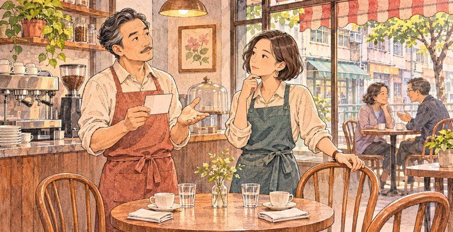

HSP-14 · Hong Kong · 10–15 minutes · Service standardisation · Personalisation · Guest preferences
Follow the script. Recognise the occasion?

What does hospitality sound like?
Hong Kong launched its Hospitality Campaign on 3 June 2024, including a promotion encouraging frontline staff and the public to go a little further in welcoming visitors. The announcement did not prescribe one greeting for every guest or demonstrate a particular service design’s results.
The café and guest requests below are fictional. The decision is how to make a welcome dependable without assuming everyone wants identical attention.
Your classroom decision
Fictional classroom situation. A Hong Kong café is choosing a host-service design for a four-week trial. Its experienced hosts can use either approach after funded preparation. Staffing, training time and the service budget are the same; the manager has checked that either design fits ordinary demand without shifting unpaid work to staff.
A provides a short, fixed sequence: welcome, explain ordering, offer information about the day’s dessert, then make one later check-in. Guests can decline optional offers or further conversation at any point. A gives hosts prepared responses and a manager route for requests outside those responses. B keeps the same required tasks but lets hosts choose conversational wording, whether to offer optional information and the timing of check-ins after asking what the guest wants.
Both keep accurate prices, order confirmation, food-safety and allergy procedures, accessibility, queue fairness and a clear way to request help. Neither allows pressure selling, unauthorised discounts or guessing needs from age, nationality or appearance. Hosts may spend up to two minutes arranging ordinary preferences; longer or unavailable requests go to the manager. The café is not promising unlimited concierge service.
| Design feature | A · Prepared script | B · Bounded discretion |
|---|
| Common requirements | Accurate information, safe ordering, fair access and help | Same |
| Optional conversation | Prepared sequence; guest may decline | Host adapts within stated limits |
| Request outside prepared responses | Manager decides | Host may adjust approved service timing; manager for wider changes |
| Management challenge | Keep responses useful and avoid mechanical delivery | Coach judgement and prevent inconsistent promises |
Your decisionWhich design would you trial, A or B? Name one service commitment that must stay consistent and one part of the encounter where identical words or timing may not be necessary.
Round 2 · More information
Two guests state different preferences. One says, “I am working quietly. Please bring what I order and let me ask if I need anything else.” Another says, “We are marking a birthday. Could we order the ordinary dessert now but have it brought after our friend arrives? No singing or announcement, please.” Neither request implies permission to record a personal profile or tell other guests about the occasion.
Both requests fit the café’s service capacity and food-safety procedures. There is no extra product, discount, reserved seat or queue priority. For the quiet guest, both designs allow the host to stop optional offers and check-ins while remaining available. A’s prepared celebration response covers the normal dessert delivery, but a changed delivery time needs the manager’s approval. The manager is available, so A can fulfil the request through that route.
Under B the host may confirm the requested timing and coordinate the ordinary dessert with the service team without manager approval. Both routes can arrange this within the funded time. These are two illustrative encounters, not a survey showing what most guests want or evidence that either design increases sales. The choice is where to place routine judgement and how to preserve dependable service.
Your decisionAfter these requests, which design would you adopt or revise? Give the host’s response to each guest, one non-negotiable standard, and a clear boundary for when the manager must become involved.
Same commitment, different attention
For the quiet guest, a short acknowledgement and a clear way to call for help can be attentive service. Continuing optional conversation after a refusal would not be required by either proposal. For the celebration, confirm what timing is wanted and what can be delivered; do not turn a private request into a public performance.
A script is not necessarily rigid treatment
A can protect completeness and give hosts reliable responses. Here it also respects refusals and can accommodate the birthday request with a manager’s decision. Its challenge is whether everyday variation repeatedly requires escalation or the prepared wording starts to obscure what a guest actually said.
B can handle this timing request at the frontline, but discretion needs boundaries. It is not permission to skip order checks, make unsupported allergy assurances, promise unpriced extras or disadvantage another table. The supplied examples do not prove that B is always faster, cheaper or more satisfying.
Evaluate the service promise
During the trial, check whether required information and order checks were completed, expressed preferences were respected, and promises stayed within capacity. Ask hosts where the script or discretion left them uncertain. Look at requests that needed escalation, not just how enthusiastically someone delivered a greeting.
The café could revise A with clearer prepared branches or choose B with coaching and review. Revisions must fit the funded trial, and any resource expansion needs a new decision. Do not count more dessert offers as automatically better hospitality or infer a revenue gain from these two conversations.
Instructor note
Ask pairs to role-play both encounters under A and B. A must not be caricatured as forcing conversation; B must not become unlimited free service. Have students mark the shared standard, the adaptable element and the escalation boundary on the same service card.
HSP-09 chooses a whole reception’s format; PPL-08 gives employees ownership across work stages. This case designs individual guest encounters based on expressed preferences. Historical research on scripts measures perceived service quality in particular settings, not this café’s profits. It supports asking about task and treatment, not stereotyping customers or prescribing a universal script level.
Round two
Two guests state different preferences. One says, “I am working quietly. Please bring what I order and let me ask if I need anything else.” Another says, “We are marking a birthday. Could we order the ordinary dessert now but have it brought after our friend arrives? No singing or announcement, please.” Neither request implies permission to record a personal profile or tell other guests about the occasion.
Both requests fit the café’s service capacity and food-safety procedures. There is no extra product, discount, reserved seat or queue priority. For the quiet guest, both designs allow the host to stop optional offers and check-ins while remaining available. A’s prepared celebration response covers the normal dessert delivery, but a changed delivery time needs the manager’s approval. The manager is available, so A can fulfil the request through that route.
Under B the host may confirm the requested timing and coordinate the ordinary dessert with the service team without manager approval. Both routes can arrange this within the funded time. These are two illustrative encounters, not a survey showing what most guests want or evidence that either design increases sales. The choice is where to place routine judgement and how to preserve dependable service.
Your decisionAfter these requests, which design would you adopt or revise? Give the host’s response to each guest, one non-negotiable standard, and a clear boundary for when the manager must become involved.